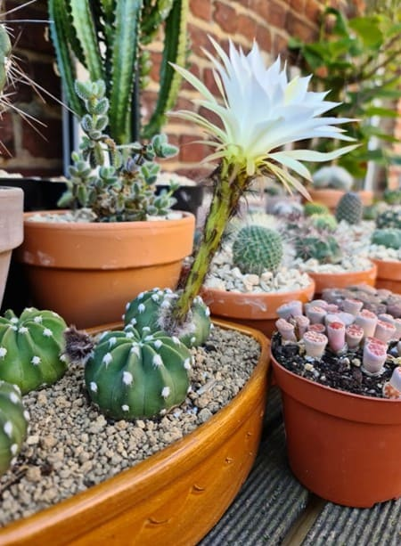
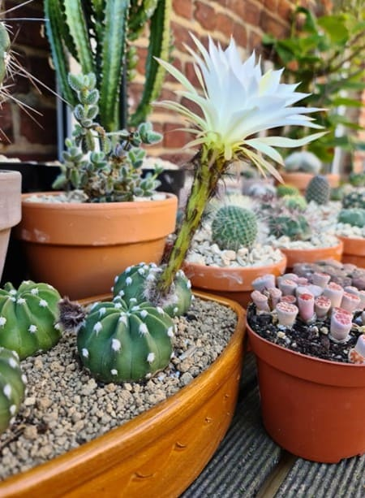

Galerie photo de mes autres Cactus
Végétaux présents ici: Astrophytum myriostigma, Coryphanta cornifera, Echinocactus grusonii, Echinofossulocactus multicostatus, Echinopsis subdenudata, Espostoa, Ferocactus glaucescens, Ferocactus stainesii, Opuntia, Oreocereus celsianus, Stetsonia coryne.
Astrophytum myriostigma
Voir la fiche info
Coryphanta cornifera
Voir la fiche info
.jpg "Coryphanta cornifera")
Espostoa
Voir la fiche info
Echinocactus grusonii
Voir la fiche info
Echinofossulocactus multicostatus
Voir la fiche info
.jpg "Echinofossulocactus multicostatus")
Echinopsis subdenudata
Voir la fiche info
.jpg "Echinopsis subdenudata") 

Ferocactus glaucescens
Voir la fiche info
.jpg "Ferocactus glaucescens")
.jpg "Ferocactus glaucescens")
Ferocactus stainesii
Voir la fiche info
.jpg "Ferocactus stainesii")
.jpg "Ferocactus stainesii")
Opuntia
Voir la fiche info
.jpg "opuntia")
.jpg "opuntia")
Oreocereus celsianus
Voir la fiche info
Stetsonia coryne
Voir la fiche info